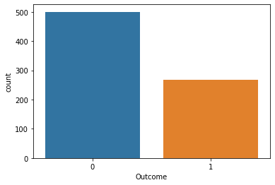
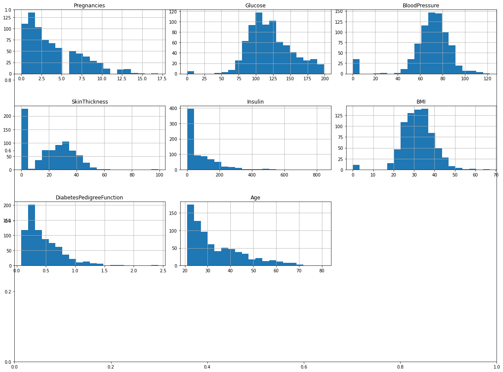
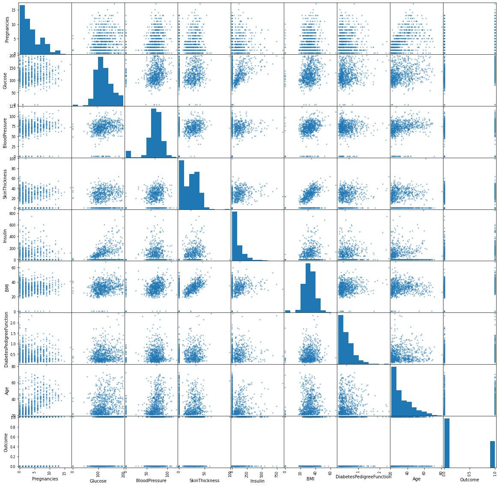
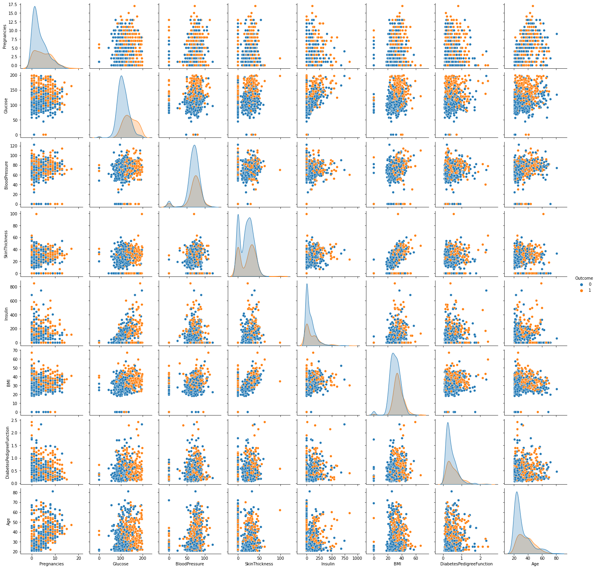
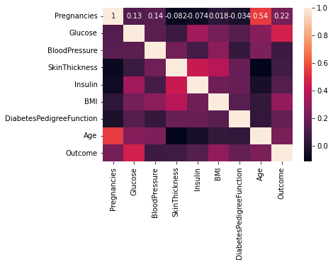
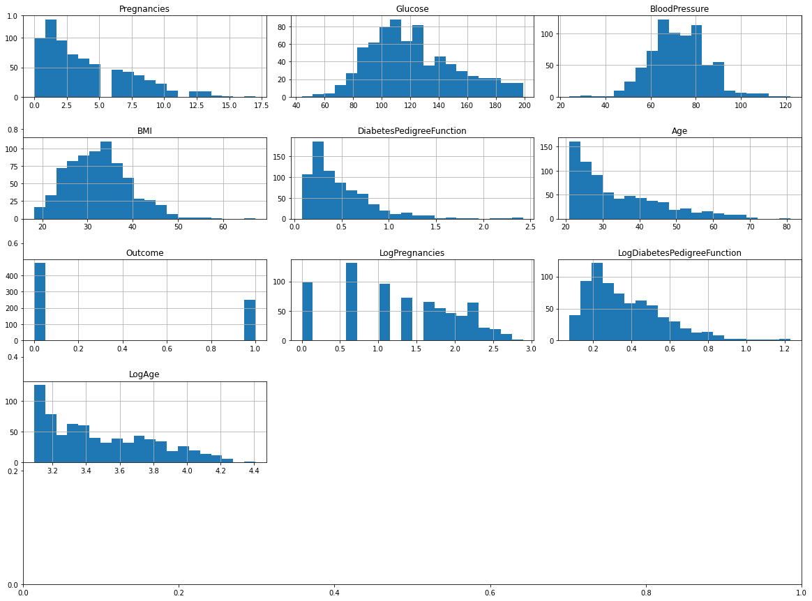
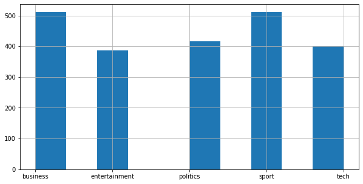
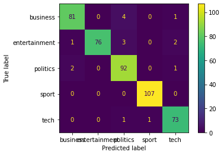

# Importing libraries
import pandas as pd
from pandas.plotting import scatter_matrix
import numpy as np
import matplotlib.pyplot as plt
import seaborn as sns
import itertools
from sklearn.naive_bayes import GaussianNB
from sklearn.preprocessing import MinMaxScaler
from sklearn.metrics import accuracy_score
from sklearn.metrics import confusion_matrix
from sklearn.metrics import classification_report
from sklearn.model_selection import train_test_split, cross_val_score
import warnings
warnings.filterwarnings('ignore')
# Importing dataset
df = pd.read_csv('diabetes.csv')
Today’s Summary and Learning Objectives
Statistical Foundations of Naive Bayes Classifiers.
- The beauty of Bayes Theorem in action; - The Naive Bayes assumptions; - Three versions of Naive Bayes: - Gaussian Naive Bayes. - Multinomial Naive Bayes. - Bernoulli Naive Bayes.
“Knowing the underlying statistics allows us to implement and interpret model outputs more effectively.”
Naive Bayes Classifiers Implementation in
Python.- Beyond theory, we will apply Machine Learning in real-world classification problems. - Why Python? A versatile tool for data science and machine learning. - Libraries Make Life Easier: Utilizing NumPy, pandas, and scikit-learn for Naive Bayes.
“Understanding the code and computational aspects enables us to apply Naive Bayes to real-world problems efficiently.”
Let’s embark on a journey through the realms of probability, statistics, and machine learning!
#What is a Classification Problem and Why do we use Machine Learning in Classification?
Classification involves categorizing data into predefined classes or groups based on their features. The goal is to accurately assign new data points to one of these categories.
Real-World Examples
- Business: From customer segmentation to fraud detection, classification drives smarter business decisions.
- Healthcare: Predicting disease outbreaks, patient diagnosis, and treatment planning.
- Technology: Image and Voice recognition.
- Political Science: Policy Expressed Agendas.
Advantages of Machine Learning for Classification
- Efficiency at Scale: Machine learning algorithms can quickly classify large volumes of data with high accuracy.
- Pattern Recognition: ML models excel at recognizing complex patterns in data that are not easily discernible by humans.
- Adaptability: ML classifiers can adapt to new, unseen data, making them ideal for dynamic environments.
- Automation: Automates the decision-making process in real-time applications, like spam detection or medical diagnoses.
- Continuous Improvement: ML models can learn from new data over time, improving their accuracy and robustness.
Machine learning has transformed the landscape of classification, providing tools that offer precision, speed, and flexibility, which are unparalleled by traditional human and statistical methods.
#What is Naive Bayes?
A probabilistic machine learning model based on Bayes’ Theorem.
Assumes independence among predictors.
Simple yet powerful for classification tasks.
The Origins of Bayes’ Theorem
Developed by the English statistician Thomas Bayes (1701–1761).
Bayes’ Theorem describes the probability of an event, based on prior knowledge of conditions that might be related to the event.
Bayes’ Theorem
\[ P(A|B) = \frac{P(B|A) \cdot P(A)}{P(B)} \]
- \(P(A|B)\) is the posterior probability: Probability of event A occurring given that B is true - updated probability after the evidence is considered.
- \(P(A)\) is the prior probability: Initial probability of event A - the probability before the evidence is considered.
- \(P(B|A)\) is the likelihood: Probability of observing event B given that A is true.
- \(P(B)\) is the marginal probability: Total probability of the evidence, event B.
Understanding Conditional Probability
Conditional probability is the probability of an event occurring given that another event has already occurred.
- Definition: \[ P(A|B) = \frac{P(A \cap B)}{P(B)} \] is the probability of event A occurring given that B is true.
- Interpretation: How likely is A if we know that B happens?
What is Joint Probability?
Joint probability refers to the probability of two events occurring together.
- Definition: \(P(A \cap B)\) is the probability that both A and B occur.
- Relation to Conditional Probability:
\[ P(A \cap B) = P(A|B) \cdot P(B) \] \[ P(B \cap A) = P(B|A) \cdot P(A) \]
This formula is crucial for understanding Bayes’ Theorem.
Symmetry in Joint Events
Joint probability is symmetric, meaning:
\[ P(A \cap B) = P(B \cap A) \]
Thus, we can also express it as:
\[ P(A \cap B) = P(B|A) \cdot P(A) \]
This symmetry is the key to deriving Bayes’ Theorem.
Deriving Bayes’ Theorem
From Conditional Probability to Bayes’ Theorem
Given that the definition of Conditional Probability is:
\[ P(A|B) = \frac{P(A \cap B)}{P(B)} \]
And knowing:
\[ P(A \cap B) = P(B|A) \cdot P(A) \]
We can substitute to get:
\[ P(A|B) = \frac{P(B|A) \cdot P(A)}{P(B)} \]
###Why Bayes’ Theorem Matters?
Bayes’ Theorem is a foundational principle in probability theory and statistics, enabling:
Incorporaton of Prior Knowledge: It allows for the integration of prior knowledge or beliefs when making statistical inferences.
Beliefs Update: It provides a systematic way to update the probability estimates as new evidence or data becomes available.
Probabilistic Thinking: Encourages a probabilistic approach to decision making, quantifying uncertainty, and reasoning under uncertainty.
Versatility in Applications: From medical diagnosis to spam filtering, Bayes’ Theorem is pivotal in areas requiring probabilistic assessment.
Bayes’ Theorem is a paradigm that shapes the way we interpret and interact with data, offering a powerful tool for learning from information and making decisions in an uncertain world.
Example: Medical Diagnosis
What is the probability that a person has the disease if they tested positive?
Consider a test for a particular disease, which has the following characteristics:
- Disease Prevalence (Prior Probability): 0.1%, \(P(Disease) = 0.001\).
- Test Sensitivity (True Positive Rate): 99%, \(P(Pos | Disease) = 0.99\).
- Test Specificity (True Negative Rate): 95%, \(P(Neg | NoDisease) = 0.95\).
Understanding Our Priors
- Prior Probability of Having the Disease: \(P(Disease) = 0.001\)
- Prior Probability of Not Having the Disease: \(P(NoDisease) = 1 - P(Disease) = 0.999\)
These priors are essential for our Bayes’ Theorem calculation.
Applying Bayes’ Theorem
To find the posterior probability \(P(Disease | Pos)\), we apply Bayes’ Theorem:
\[ P(Disease | Pos) = \frac{P(Pos | Disease) \cdot P(Disease)}{P(Pos)} \]
Where \(P(Pos)\) can be found using the law of total probability:
\[ P(Pos) = P(Pos | Disease) \cdot P(Disease) + P(Pos | NoDisease) \cdot P(NoDisease) \]
The law of total probability is a fundamental rule relating marginal probabilities to conditional probabilities. It states that the probability of an event can be found by considering all possible ways that the event can occur.
Finding \(P(Pos)\)
Given our test specificity is 95%, the false positive rate is 5% (\(P(Pos | NoDisease) = 0.05\)).
\[ P(Pos) = (0.99 \times 0.001) + (0.05 \times 0.999) \] \[ P(Pos) = 0.051 \]
The Posterior Probability
- Given: \(P(Pos | Disease) = 0.99\), \(P(Disease) = 0.001\), and our calculated \(P(Pos) = 0.051\).
\[ P(Disease | Pos) = \frac{0.99 \times 0.001}{0.051 } \]
\[ P(Disease | Pos) = 0.019 \]
Despite testing positive, an individual has only a \(1.9\%\) chance of having the disease. This result might seem counterintuitive given the high test sensitivity (99%), but it is largely due to the low prevalence of the disease (0.1%) and the impact of false positives in the wider population.
#Implications: This underscores a crucial aspect of diagnostic tests - a high sensitivity rate does not guarantee a high probability of having the disease upon testing positive, especially when the disease prevalence is low. The relatively low posterior probability highlights the importance of considering both the characteristics of the test (such as sensitivity and specificity) and the prevalence of the condition in the population when interpreting test results.
Applying Bayes’ Theorem for Classification
Given a set of features \(X = (x_1, x_2, ..., x_n)\), we want to predict the class \(C_k\) out of \(m\) possible classes.
The goal is to find:
\[ P(C_k|X) = \frac{P(X|C_k) \cdot P(C_k)}{P(X)} \]
- \(P(C_k|X)\) is the posterior probability: Probability of class \(C_k\) given features \(X\).
- \(P(C_k)\) is the prior probability: Probability of class \(C_k\).
- \(P(X|C_k)\) is the likelihood: Likelihood of features \(X\) given class \(C_k\).
- \(P(X)\) is the marginal probability: Evidence, the total probability of observing features \(X\).
How do we deal with \(X\) being multidimensional?
The Complexity of High Dimensionality
When applying Bayes’ Theorem to classification:
- We encounter multidimensional feature vectors \(X = (x_1, x_2, ..., x_n)\).
- Calculating the likelihood, \(P(X|C_k)\), directly becomes impractical due to the curse of dimensionality.
- High-dimensional spaces increase the data requirement exponentially.
- Direct calculation of \(P(X|C_k)\) involves understanding complex relationships among all features.
Example: The Challenge of High Dimensionality in Spam Detection
Context: Email spam detection based on multidimensional feature vectors \(X = (x_1, x_2, ..., x_n)\).
Goal: Classify emails into spam (\(C_1\)) or not spam (\(C_2\)).
Multidimensional Features
- Frequency of specific keywords (e.g., “offer”, “free”).
- Email length.
- Use of capital letters.
- Presence of attachments.
- Time of day the email was sent.
Each feature contributes to identifying spam.
Example: The Challenge of High Dimensionality in Spam Detection
Complexity of Direct Calculation \(P(X|C_k)\)
- Directly calculating \(P(X|C_k)\) requires assessing how all features \(x_1, x_2, ..., x_n\) collectively influence the likelihood of an email being spam.
- With 10 binary features, there are \(2^{10} = 1024\) possible combinations.
- Accurately estimating \(P(X|C_k)\) for all combinations requires a vast dataset, often impractical to obtain.
The Naive Assumption
The Naive Bayes assumption simplifies the problem by assuming each feature \(x_i\) is independent of every other feature.
This leads to:
\[ P(X|C_k) = P(x_1, x_2, ..., x_n|C_k) = \prod_{i=1}^{n} P(x_i|C_k) \]
Thus, our classifier becomes:
\[ P(C_k|X) = \frac{P(C_k) \prod_{i=1}^{n} P(x_i|C_k)}{P(X)} \]
- Independence: Each feature \(x_i\) is independent of every other feature given the class \(C_k\).
- This assumption significantly reduces computational complexity.
The Naive Bayes Classifier
Given the independence assumption, we can rewrite Bayes’ Theorem for our classification problem:
\[ P(C_k|X) = \frac{P(C_k) \prod_{i=1}^{n} P(x_i|C_k)}{P(X)} \]
- Classification Decision: Since $P(X)=P(x_1, , x_n) $ is constant across all classes, we focus on the classification rule that maximize the numerator:
\[ P(C_k \mid x_1, \dots, x_n) \propto P(C_k) \prod_{i=1}^{n} P(x_i \mid C_k) \] \[ \Downarrow \]
\[ \hat{C} = \arg \max_{C_k} P(C_k) \prod_{i=1}^{n} P(x_i|C_k) \]
$ P(C_k) $ is then the relative frequency of class $ C $ in the training set.
Importance in Machine Learning
- Efficiency: Fast to train and predict.
- Scalability: Works well with large datasets.
- Versatility: Handles both binary and multiclass classification problems.
Where is Naive Bayes Used?
- Spam detection in emails.
- Sentiment analysis in social media.
- Document classification.
- Medical diagnosis.
Statistical Learning Models
Learning Paradigms: Statistical learning models can be broadly categorized into supervised and unsupervised learning based on the nature of the training data and the learning objectives.
Supervised Learning
Models are trained on labeled data. Each training example includes an input and a corresponding output label. The goal is to learn a mapping function from inputs to outputs to make predictions on new, unseen data.
Examples
- Linear Regression: Predicts a continuous output. Common in predicting housing prices, stock market trends, etc.
- Naive Bayes Classifiers: Suitable for classification tasks like: image recognition, spam detection, and document categorization.
- Random Forests: Versatile for classification and regression tasks. Used in customer segmentation, medical diagnosis, and more.
- Support Vector Machines (SVM): Effective in high-dimensional spaces for classification tasks such as image recognition and text categorization.
Statistical learning models
Unsupervised Learning
Models work with unlabeled data, focusing on identifying patterns, clusters, or relationships within the data without predefined labels.
Examples
- K-Means Clustering: Identifies clusters within the data. Applied in market segmentation, gene sequence analysis, etc.
- Principal Component Analysis (PCA): A dimensionality reduction technique used to reduce the dimensionality of large data sets.
- Topic Models (e.g., Latent Dirichlet Allocation - LDA): Used to discover the abstract “topics” that occur in a collection of documents. Topic modeling is widely used in text mining for uncovering hidden thematic structures in text data, such as finding trends in scientific literature, organizing large archives of documents, or enhancing search engines.
Generative vs. Discriminative Models
Within the supervised and unsupervised paradigm, models can be further categorized into generative and discriminative types:
Generative Models
- Approach: Learn the joint probability distribution \(P(X, Y)\) and use it to calculate the conditional probability \(P(Y|X)\) for prediction.
- Goal: To model how data is generated by estimating the underlying probability distribution.
- Use: Common in supervised learning, especially when predicting class probabilities is important.
- Examples: Naive Bayes, Linear Discriminant Analysis, Quadratic Discriminant Analysis.
Discriminative Models
- Approach: Directly learn the conditional probability \(P(Y|X)\) or decision boundary between classes without assuming anything about the joint distribution.
- Goal: To find a division in the feature space that separates classes.
- Use: Typically used in supervised learning to classify data into labeled categories.
- Examples: Logistic Regression, Support Vector Machines, Decision Trees.
Understanding the distinctions between these paradigms and model types is crucial for selecting the appropriate approach for a given machine learning task.
Naive Bayes as a Generative Model
Naive Bayes is a fundamental example of a generative model.
It makes strong independence assumptions between features given the class label.
Uses Bayes’ Theorem to estimate the probability of each class given the feature vector \(X\).
\[ P(C_k|X) = \frac{P(X|C_k)P(C_k)}{P(X)} \]
- Strengths: Simplicity, efficiency, and effectiveness in high-dimensional spaces.
Why Generative?
- By learning the distribution of each class \(P(X|C_k)\) and the prior \(P(C_k)\), Naive Bayes models the generation process of the data.
- This allows not only for classification but also for generating new data samples based on the learned distributions.
The Role of Naive Bayes in Machine Learning
- Naive Bayes exemplifies the power and simplicity of generative models.
- Provides a foundation for understanding more complex generative approaches.
- Remains a go-to method for many classification tasks due to its interpretability and efficiency.
Overview of Naive Bayes Classifiers
Naive Bayes classifiers vary mainly by the distribution they assume for the feature data.
Gaussian Naive Bayes
- Used for features with a normal distribution.
- Suitable for continuous data.
Multinomial Naive Bayes
- Used for discrete data.
- Ideal for features that represent counts (e.g., word counts in text classification).
Bernoulli Naive Bayes
- Used for binary/boolean features.
- Appropriate when features are independent and follow a binomial distribution.
Also:
- Complement Naive Bayes: A version of Multinomial Naive Bayes that is particularly suited for imbalanced data sets.
- Categorical Naive Bayes: Assumes that each feature has its own categorical distribution.
Each variant is best suited to different types of data and it’s important to choose based on the nature of your features.
Gaussian Naive Bayes
- Assumption: The features \(x_i\) are assumed to be normally distributed (Gaussian) for each class \(C_k\).
- Applicability: Ideal for datasets where features are continuous and can be approximated by a Gaussian distribution.
Python:GaussianNBin thescikit-learnpackage implements the Gaussian Naive Bayes algorithm for classification.
Formula:
\[ P(x_i | C_k) = \frac{1}{\sqrt{2\pi\sigma_{k}^{2}}} \exp\left(-\frac{(x_i - \mu_{k})^2}{2\sigma_{k}^{2}}\right) \]
- Where \(\mu_{k}\) and \(\sigma_{k}^{2}\) are the mean and variance of feature \(x_i\) for class \(C_k\). They are estimated using maximum likelihood.
Multinomial Naive Bayes
- Assumption: The features \(x_i\) represent the frequencies with which certain events have been generated by a multinomial distribution.
- Applicability: Suited for count data, such as the frequency of words in text documents.
Python:MultinomialNBin thescikit-learnpackage implements the naive Bayes algorithm for multinomially. The distribution is parametrized by vectors $ {C_k} = ({C_k1},,{C_kn}) $ for each class $ C_k $, where $ n $ is the number of features and $ {C_ki} $ is the probability $ P(x_i C_k) $ of feature $ i $ appearing in a sample belonging to class $ C_k $.
The parameters $ _{C_k} $ is estimated by a smoothed version of maximum likelihood, i.e. relative frequency counting:
\[ \hat{\theta}_{C_ki} = \frac{ N_{C_ki} + \alpha}{N_{C_k} + \alpha n} \]
where $ N_{C_ki} = {x T} x_i $ is the number of times feature $ i $ appears in a sample of class $ C_k $ in the training set $ T $, and $ N{C_k} = {i=1}^{n} N{C_ki} $ is the total count of all features for class $ C_k $.
If a given class and feature value never occur together in the training data, then the frequency-based probability estimate will be zero, because the probability estimate is directly proportional to the number of occurrences of a feature’s value. The smoothing priors $ $ accounts for features not present in the learning samples (pseudocount) and prevents zero probabilities in further computations. Setting $ = 1 $ is called Laplace smoothing, while $ < 1 $ is called Lidstone smoothing.
Bernoulli Naive Bayes
Assumption: The features \(x_i\) are binary (Boolean) variables indicating the presence or absence of a feature.
Applicability: Effective for datasets where features are binary, such as text classification where a word’s presence or absence is a feature.
Python:BernoulliNBin thescikit-learnpackage implements the naive Bayes training and classification algorithms for data that is distributed according to multivariate Bernoulli distributions; i.e., there may be multiple features but each one is assumed to be a binary-valued (Bernoulli, boolean) variable. Therefore, this class requires samples to be represented as binary-valued feature vectors; if handed any other kind of data, aBernoulliNBinstance may binarize its input (depending on thebinarizeparameter).
The decision rule for Bernoulli naive Bayes is based on
\[ P(x_i \mid C_k) = P(x_i = 1 \mid C_k) x_i + (1 - P(x_i = 1 \mid C_k)) (1 - x_i) \]
which differs from multinomial NB’s rule in that it explicitly penalizes the non-occurrence of a feature $ i $ that is an indicator for class $ y $, where the multinomial variant would simply ignore a non-occurring feature.
Choosing the Right Naive Bayes Classifier
Different Naive Bayes classifiers are suited to different types of data distributions.
Selection Strategy
Analyze Features: Understand the distribution of your data (plot your data!).
Preprocess: Tailor preprocessing to fit the model’s assumptions (e.g. log transformations).
Domain Knowledge: Let insights from the domain guide your choice.
Model Comparison: Apply different models and evaluate their performance with cross-validation.
Hyperparameter Tuning: For Naive Bayes models, particularly Multinomial and Bernoulli, the
alphaparameter is crucial. Correctly tuning thealphaparameter is a form of regularization that enhances the model’s accuracy and robustness, especially important for sparse or imbalanced datasets.
The best classifier aligns with the statistical properties of your data and performs best empirically.
Measuring Performance
Confusion Matrix: it is a powerful tool for measuring the performance of a classification model. It provides insights beyond overall accuracy, allowing for a detailed analysis of the model’s effectiveness.
| Predicted: 0 | Predicted: 1 | |
|---|---|---|
| Actual: 0 | True Negative | False Positive |
| Actual: 1 | False Negative | True Positive |
- Accuracy: \[\dfrac{\text{correct predictions}}{\text{total observations}} \ = \ \dfrac{tp + tn}{tp + tn + fp + fn}\]
- Overall effectiveness of the model.
- High accuracy: lots of correct predictions!
Measuring Performance
Confusion Matrix:
| Predicted: 0 | Predicted: 1 | |
|---|---|---|
| Actual: 0 | True Negative | False Positive |
| Actual: 1 | False Negative | True Positive |
- Precision: \[\dfrac{\text{true positives}}{\text{total predicted positive}} \ = \ \dfrac{tp}{tp + fp}\]
- Accuracy of positive predictions.
- High precision: low false-positive rates.
Measuring Performance
Confusion Matrix:
| Predicted: 0 | Predicted: 1 | |
|---|---|---|
| Actual: 0 | True Negative | False Positive |
| Actual: 1 | False Negative | True Positive |
- Recall: \[\dfrac{\text{true positives}}{\text{total actual positive}} \ = \ \dfrac{tp}{tp + fn}\]
- Fraction of positives correctly identified.
- High recall: low false-negative rates.
Measuring Performance
- F1-Score:
\[ \text{F1} \ = \ 2 \times \dfrac{\text{precision} \times \text{recall}}{\text{precision} + \text{recall}} \]
- Harmonic mean of precision and recall.
- A higher F1 score indicates a better balance between precision and recall. For example, in a medical diagnosis scenario, you would want a model that neither predicts too many false negatives (missing out on true cases) nor too many false positives (causing unnecessary alarm).
Understanding Model Performance
Imbalanced Classes: Precision, Recall, and F1 score are crucial in the presence of imbalanced classes.
Model Objective: Prioritize metrics based on the application needs, e.g., Recall over Precision in medical diagnostics.
The confusion matrix offers a comprehensive way to evaluate and improve classification models by providing insights into their specific strengths and weaknesses.
| Predicted: 0 | Predicted: 1 | |
|---|---|---|
| Actual: 0 | True Negative | False Positive |
| Actual: 1 | False Negative | True Positive |
Practice: Gaussian Naive Bayes
Pima Indians Diabetes Database Overview
Context
- This dataset (Kaggle Dataset Link) originates from the National Institute of Diabetes and Digestive and Kidney Diseases.
- The aim is to predict whether a patient has diabetes based on diagnostic measurements.
- All patients are females of at least 21 years old of Pima Indian heritage, selected under specific constraints for this study.
Content
The dataset features several medical predictor variables alongside one target variable, Outcome. Predictor variables include:
- Number of pregnancies
- BMI (Body Mass Index)
- Insulin level
- Age
- …among others.
These variables assist in diagnostically predicting diabetes presence.
Step 0: Import libraries and Dataset
Step 1: Descriptive Statistics
# Preview data
df.head()| Pregnancies | Glucose | BloodPressure | SkinThickness | Insulin | BMI | DiabetesPedigreeFunction | Age | Outcome | |
|---|---|---|---|---|---|---|---|---|---|
| 0 | 6 | 148 | 72 | 35 | 0 | 33.6 | 0.627 | 50 | 1 |
| 1 | 1 | 85 | 66 | 29 | 0 | 26.6 | 0.351 | 31 | 0 |
| 2 | 8 | 183 | 64 | 0 | 0 | 23.3 | 0.672 | 32 | 1 |
| 3 | 1 | 89 | 66 | 23 | 94 | 28.1 | 0.167 | 21 | 0 |
| 4 | 0 | 137 | 40 | 35 | 168 | 43.1 | 2.288 | 33 | 1 |
# Dataset dimensions - (rows, columns)
df.shape(768, 9)# Features data-type
df.info()<class 'pandas.core.frame.DataFrame'>
RangeIndex: 768 entries, 0 to 767
Data columns (total 9 columns):
# Column Non-Null Count Dtype
--- ------ -------------- -----
0 Pregnancies 768 non-null int64
1 Glucose 768 non-null int64
2 BloodPressure 768 non-null int64
3 SkinThickness 768 non-null int64
4 Insulin 768 non-null int64
5 BMI 768 non-null float64
6 DiabetesPedigreeFunction 768 non-null float64
7 Age 768 non-null int64
8 Outcome 768 non-null int64
dtypes: float64(2), int64(7)
memory usage: 54.1 KB# Statistical summary
df.describe().T| count | mean | std | min | 25% | 50% | 75% | max | |
|---|---|---|---|---|---|---|---|---|
| Pregnancies | 768.0 | 3.845052 | 3.369578 | 0.000 | 1.00000 | 3.0000 | 6.00000 | 17.00 |
| Glucose | 768.0 | 120.894531 | 31.972618 | 0.000 | 99.00000 | 117.0000 | 140.25000 | 199.00 |
| BloodPressure | 768.0 | 69.105469 | 19.355807 | 0.000 | 62.00000 | 72.0000 | 80.00000 | 122.00 |
| SkinThickness | 768.0 | 20.536458 | 15.952218 | 0.000 | 0.00000 | 23.0000 | 32.00000 | 99.00 |
| Insulin | 768.0 | 79.799479 | 115.244002 | 0.000 | 0.00000 | 30.5000 | 127.25000 | 846.00 |
| BMI | 768.0 | 31.992578 | 7.884160 | 0.000 | 27.30000 | 32.0000 | 36.60000 | 67.10 |
| DiabetesPedigreeFunction | 768.0 | 0.471876 | 0.331329 | 0.078 | 0.24375 | 0.3725 | 0.62625 | 2.42 |
| Age | 768.0 | 33.240885 | 11.760232 | 21.000 | 24.00000 | 29.0000 | 41.00000 | 81.00 |
| Outcome | 768.0 | 0.348958 | 0.476951 | 0.000 | 0.00000 | 0.0000 | 1.00000 | 1.00 |
# Count of null values
df.isnull().sum()Pregnancies 0
Glucose 0
BloodPressure 0
SkinThickness 0
Insulin 0
BMI 0
DiabetesPedigreeFunction 0
Age 0
Outcome 0
dtype: int64Observations:
- There are a total of 768 records and 9 features in the dataset.
- Each feature can be either of integer or float dataype.
- Some features like Glucose, Blood pressure, Insulin, BMI have zero values which represent missing data.
- There are zero NaN values in the dataset.
- In the outcome column, 1 represents diabetes positive and 0 represents diabetes negative.
# Outcome countplot
sns.countplot(x = 'Outcome',data = dataset)
# Histogram of each feature
col = df.columns[:8]
plt.subplots(figsize = (20, 15))
length = len(col)
for i, j in itertools.zip_longest(col, range(length)):
plt.subplot((length//2), 3, j + 1)
plt.subplots_adjust(wspace = 0.1,hspace = 0.5)
df[i].hist(bins = 20)
plt.title(i)
plt.show()
# Scatter plot matrix
scatter_matrix(df, figsize = (20, 20));
# Pairplot
sns.pairplot(data = df, hue = 'Outcome')
plt.show()
# Heatmap
sns.heatmap(df.corr(), annot = True)
plt.show()
Observations:
The countplot tells us that the dataset is imbalanced, as number of patients who don’t have diabetes is more than those who do.
From the correaltion heatmap, we can see that there is a high correlation between Outcome and [Glucose,BMI,Age,Insulin].
Step 2: Data Preprocessing
df_new = df
# list(df_new)
# Preview data
df_new.head()| Pregnancies | Glucose | BloodPressure | SkinThickness | Insulin | BMI | DiabetesPedigreeFunction | Age | Outcome | |
|---|---|---|---|---|---|---|---|---|---|
| 0 | 6 | 148 | 72 | 35 | 0 | 33.6 | 0.627 | 50 | 1 |
| 1 | 1 | 85 | 66 | 29 | 0 | 26.6 | 0.351 | 31 | 0 |
| 2 | 8 | 183 | 64 | 0 | 0 | 23.3 | 0.672 | 32 | 1 |
| 3 | 1 | 89 | 66 | 23 | 94 | 28.1 | 0.167 | 21 | 0 |
| 4 | 0 | 137 | 40 | 35 | 168 | 43.1 | 2.288 | 33 | 1 |
# checking zero values
# np.where(df_new['Glucose'] == 0)[0].shape
# np.where(df_new['BloodPressure'] == 0)[0].shape
# np.where(df_new['SkinThickness'] == 0)[0].shape
np.where(df_new['Insulin'] == 0)[0].shape
# np.where(df_new['BMI'] == 0)[0].shape
# np.where(df_new['DiabetesPedigreeFunction'] == 0)[0].shape
# np.where(df_new['Age'] == 0)[0].shape(374,)# Replacing zero values with NaN
df_new[['Glucose',
'BloodPressure',
'SkinThickness',
'Insulin',
'BMI',
'DiabetesPedigreeFunction',
'Age']] = df_new[['Glucose',
'BloodPressure',
'SkinThickness',
'Insulin',
'BMI',
'DiabetesPedigreeFunction',
'Age']].replace(0, np.NaN) # Count of NaN
df_new.isnull().sum()Pregnancies 0
Glucose 5
BloodPressure 35
SkinThickness 227
Insulin 374
BMI 11
DiabetesPedigreeFunction 0
Age 0
Outcome 0
dtype: int64# Removing Features with too many zeros NaNs
df_new = df_new.drop(['SkinThickness', 'Insulin'], axis = 1)
# Removing Observations with NaNs
df_new = df_new.dropna(subset=['Glucose'])
df_new = df_new.dropna(subset=['BloodPressure'])
df_new = df_new.dropna(subset=['BMI'])
#dataset_new = dataset_new[dataset_new['Glucose'] != 0]
#dataset_new = dataset_new[dataset_new['BloodPressure'] != 0]
#dataset_new = dataset_new[dataset_new['BMI'] != 0]# Statistical summary
df_new.describe().T| count | mean | std | min | 25% | 50% | 75% | max | |
|---|---|---|---|---|---|---|---|---|
| Pregnancies | 724.0 | 3.866022 | 3.362803 | 0.000 | 1.000 | 3.000 | 6.0000 | 17.00 |
| Glucose | 724.0 | 121.882597 | 30.750030 | 44.000 | 99.750 | 117.000 | 142.0000 | 199.00 |
| BloodPressure | 724.0 | 72.400552 | 12.379870 | 24.000 | 64.000 | 72.000 | 80.0000 | 122.00 |
| BMI | 724.0 | 32.467127 | 6.888941 | 18.200 | 27.500 | 32.400 | 36.6000 | 67.10 |
| DiabetesPedigreeFunction | 724.0 | 0.474765 | 0.332315 | 0.078 | 0.245 | 0.379 | 0.6275 | 2.42 |
| Age | 724.0 | 33.350829 | 11.765393 | 21.000 | 24.000 | 29.000 | 41.0000 | 81.00 |
| Outcome | 724.0 | 0.343923 | 0.475344 | 0.000 | 0.000 | 0.000 | 1.0000 | 1.00 |
# log transformation
df_new['LogPregnancies'] = np.log1p(df_new['Pregnancies'])
df_new['LogDiabetesPedigreeFunction'] = np.log1p(df_new['DiabetesPedigreeFunction'])
df_new['LogAge'] = np.log1p(df_new['Age'])
# Statistical summary
df_new.describe().T| count | mean | std | min | 25% | 50% | 75% | max | |
|---|---|---|---|---|---|---|---|---|
| Pregnancies | 724.0 | 3.866022 | 3.362803 | 0.000000 | 1.000000 | 3.000000 | 6.000000 | 17.000000 |
| Glucose | 724.0 | 121.882597 | 30.750030 | 44.000000 | 99.750000 | 117.000000 | 142.000000 | 199.000000 |
| BloodPressure | 724.0 | 72.400552 | 12.379870 | 24.000000 | 64.000000 | 72.000000 | 80.000000 | 122.000000 |
| BMI | 724.0 | 32.467127 | 6.888941 | 18.200000 | 27.500000 | 32.400000 | 36.600000 | 67.100000 |
| DiabetesPedigreeFunction | 724.0 | 0.474765 | 0.332315 | 0.078000 | 0.245000 | 0.379000 | 0.627500 | 2.420000 |
| Age | 724.0 | 33.350829 | 11.765393 | 21.000000 | 24.000000 | 29.000000 | 41.000000 | 81.000000 |
| Outcome | 724.0 | 0.343923 | 0.475344 | 0.000000 | 0.000000 | 0.000000 | 1.000000 | 1.000000 |
| LogPregnancies | 724.0 | 1.319311 | 0.762929 | 0.000000 | 0.693147 | 1.386294 | 1.945910 | 2.890372 |
| LogDiabetesPedigreeFunction | 724.0 | 0.367237 | 0.198718 | 0.075107 | 0.219136 | 0.321358 | 0.487045 | 1.229641 |
| LogAge | 724.0 | 3.484730 | 0.313971 | 3.091042 | 3.218876 | 3.401197 | 3.737670 | 4.406719 |
# Histogram of each feature
col = df_new.columns[:10]
plt.subplots(figsize = (20, 15))
length = len(col)
for i, j in itertools.zip_longest(col, range(length)):
plt.subplot((length//2), 3, j + 1)
plt.subplots_adjust(wspace = 0.1,hspace = 0.5)
df_new[i].hist(bins = 20)
plt.title(i)
plt.show()
# Selecting features
features = [
'LogPregnancies',
'Glucose',
'BloodPressure',
'BMI',
'LogDiabetesPedigreeFunction',
'LogAge'
]
# Splitting X and Y
df_train, df_test = train_test_split(df_new, test_size = 0.20, random_state = 42, stratify = df_new['Outcome'] )
X_train = df_train[features]
Y_train = df_train['Outcome']
X_test = df_test[features]
Y_test = df_test['Outcome']# Checking dimensions
print("X_train shape:", X_train.shape)
print("X_test shape:", X_test.shape)
print("Y_train shape:", Y_train.shape)
print("Y_test shape:", Y_test.shape)X_train shape: (579, 6)
X_test shape: (145, 6)
Y_train shape: (579,)
Y_test shape: (145,)Step 3: Data Modelling
# Naive Bayes Algorithm
nb = GaussianNB()
nb.fit(X_train, Y_train)GaussianNB()In a Jupyter environment, please rerun this cell to show the HTML representation or trust the notebook.
On GitHub, the HTML representation is unable to render, please try loading this page with nbviewer.org.
GaussianNB()
# Making predictions on test dataset
Y_pred_nb = nb.predict(X_test)Step 4: Model Evaluation
# Evaluating using accuracy_score metric
accuracy_nb = accuracy_score(Y_test, Y_pred_nb)
# Accuracy on test set
print("Naive Bayes: " + str(accuracy_nb * 100))Naive Bayes: 70.34482758620689# Confusion matrix
cm = confusion_matrix(Y_test, Y_pred_nb)
cmarray([[71, 24],
[19, 31]])# Heatmap of Confusion matrix
sns.heatmap(pd.DataFrame(cm), annot=True)
# Classification report
print(classification_report(Y_test, Y_pred_nb)) precision recall f1-score support
0 0.79 0.75 0.77 95
1 0.56 0.62 0.59 50
accuracy 0.70 145
macro avg 0.68 0.68 0.68 145
weighted avg 0.71 0.70 0.71 145
# Cross Validation
X = df_new[features]
y = df_new['Outcome']
result = cross_val_score(nb, X, y, scoring = 'accuracy')
# Recall: If we consider that the cost of not classifying someone with diabetes is high,
# that failing to identify a sick patient (a false negative) is more dangerous
# than incorrectly diagnosing a healthy patient as sick (a false positive).
result.mean(), result.std()(0.7721264367816092, 0.023241424787067366)Practice: Multinomial Naive Bayes
Practice: Multinomial Naive Bayes
BBC Full Text Document Classification
Context
- The original dataset (Kaggle Dataset Link) consists of 2225 documents (as text files) from the BBC news website corresponding to news articles in five topical areas:
- business
- entertainment
- politics
- sport
- tech
- The aim is to predict which topic does a news article belong to based on its content.
Step 0: Import Libraries and Dataset
import pandas as pd
import numpy as np
from sklearn.feature_extraction.text import CountVectorizer, TfidfVectorizer
from sklearn.model_selection import train_test_split, cross_val_score
from sklearn.naive_bayes import MultinomialNB
from sklearn.metrics import accuracy_score, classification_report
from sklearn.metrics import confusion_matrix, ConfusionMatrixDisplay
from sklearn.pipeline import make_pipeline
from nltk.corpus import stopwords
from nltk.stem import PorterStemmer
from nltk.tokenize import word_tokenize
import nltk
import string
import warnings
warnings.filterwarnings('ignore')
# Download necessary NLTK resources
nltk.download('punkt')
nltk.download('stopwords')
# load data
df = pd.read_csv('bbc_text_cls.csv')[nltk_data] Downloading package punkt to /Users/dcorde3/nltk_data...
[nltk_data] Package punkt is already up-to-date!
[nltk_data] Downloading package stopwords to
[nltk_data] /Users/dcorde3/nltk_data...
[nltk_data] Package stopwords is already up-to-date!# Preview data
df.head()
# len(df)| text | labels | |
|---|---|---|
| 0 | Ad sales boost Time Warner profit\n\nQuarterly... | business |
| 1 | Dollar gains on Greenspan speech\n\nThe dollar... | business |
| 2 | Yukos unit buyer faces loan claim\n\nThe owner... | business |
| 3 | High fuel prices hit BA's profits\n\nBritish A... | business |
| 4 | Pernod takeover talk lifts Domecq\n\nShares in... | business |
Step 1: Descriptive Statistics
# let's check labels frequency
labels.hist(figsize=(10, 5));
Step 2: Data Preprocessing
# Define the preprocessing function
def preprocess_text(text):
# Handles the removal of stopwords and stemming
# Tokenize the text
tokens = word_tokenize(text)
# Remove punctuation and make lower case
tokens = [token.lower() for token in tokens if token.isalpha()]
# Remove stopwords
stop_words = set(stopwords.words('english'))
tokens = [token for token in tokens if token not in stop_words]
# Stem the words
stemmer = PorterStemmer()
tokens = [stemmer.stem(token) for token in tokens]
return ' '.join(tokens)# Apply the preprocessing to each row
df['processed_text'] = df['text'].apply(preprocess_text)df.head()| text | labels | processed_text | |
|---|---|---|---|
| 0 | Ad sales boost Time Warner profit\n\nQuarterly... | business | ad sale boost time warner profit quarterli pro... |
| 1 | Dollar gains on Greenspan speech\n\nThe dollar... | business | dollar gain greenspan speech dollar hit highes... |
| 2 | Yukos unit buyer faces loan claim\n\nThe owner... | business | yuko unit buyer face loan claim owner embattl ... |
| 3 | High fuel prices hit BA's profits\n\nBritish A... | business | high fuel price hit ba profit british airway b... |
| 4 | Pernod takeover talk lifts Domecq\n\nShares in... | business | pernod takeov talk lift domecq share uk drink ... |
# Split the data into features and labels
features = df['processed_text']
labels = df['labels']# Split the data into train and test sets
features_train, features_test, labels_train, labels_test = train_test_split(features, labels,
test_size=0.2,
random_state=123)# Create a text processing and classification pipeline
pipeline = make_pipeline(
# Bag of Words
# Convert the processed text into a matrix of token counts,
# which is then used as input to the MultinomialNB classifier
CountVectorizer(),
MultinomialNB()
)Step 4: Data Modeling
# Train the model
pipeline.fit(inputs_train, labels_train)Pipeline(steps=[('countvectorizer', CountVectorizer()),
('multinomialnb', MultinomialNB())])In a Jupyter environment, please rerun this cell to show the HTML representation or trust the notebook. On GitHub, the HTML representation is unable to render, please try loading this page with nbviewer.org.
Pipeline(steps=[('countvectorizer', CountVectorizer()),
('multinomialnb', MultinomialNB())])CountVectorizer()
MultinomialNB()
# Predict on the test set
labels_pred = pipeline.predict(features_test)# Step 5: Model Evaluation# Evaluate the model using train-test split
print("Train-test split evaluation:")
print(classification_report(labels_test, labels_pred))
print(f"Accuracy: {accuracy_score(labels_test, labels_pred)}")Train-test split evaluation:
precision recall f1-score support
business 0.96 0.94 0.95 86
entertainment 1.00 0.93 0.96 82
politics 0.92 0.97 0.94 95
sport 0.99 1.00 1.00 107
tech 0.95 0.97 0.96 75
accuracy 0.96 445
macro avg 0.96 0.96 0.96 445
weighted avg 0.97 0.96 0.96 445
Accuracy: 0.9640449438202248# Evaluate the model using cross-validation
cross_val_accuracy = cross_val_score(pipeline, inputs_train, labels_train, cv=5, scoring='accuracy')
print("\nCross-validation evaluation:")
print(f"Cross-validated accuracy: {np.mean(cross_val_accuracy)}")
Cross-validation evaluation:
Cross-validated accuracy: 0.9764044943820224# Confusion Matrix Display
ConfusionMatrixDisplay.from_predictions(labels_test, labels_pred)
# Let's Check Some Misclassified Examples
# identifying misclassified examples
misclassified_idx = np.where(labels_pred != labels_test)[0]
# random select a misclassified example
i = np.random.choice(misclassified_idx)
print("True class:", labels_test.iloc[i])
print("Predicted class:", labels_pred[i])
# The specific element from 'features_test'
specific_element = features_test.iloc[i]
# Find the indices where the 'text' column in the DataFrame matches the specific element
matching_indices = df.index[df['processed_text'] == specific_element].tolist()
# Print text
list(df.iloc[matching_indices,0])True class: entertainment
Predicted class: politics['Musicians to tackle US red tape\n\nMusicians\' groups are to tackle US visa regulations which are blamed for hindering British acts\' chances of succeeding across the Atlantic.\n\nA singer hoping to perform in the US can expect to pay $1,300 (£680) simply for obtaining a visa. Groups including the Musicians\' Union are calling for an end to the "raw deal" faced by British performers. US acts are not faced with comparable expense and bureaucracy when visiting the UK for promotional purposes.\n\nNigel McCune from the Musicians\' Union said British musicians are "disadvantaged" compared to their US counterparts. A sponsor has to make a petition on their behalf, which is a form amounting to nearly 30 pages, while musicians face tougher regulations than athletes and journalists. "If you make a mistake on your form, you risk a five-year ban and thus the ability to further your career," says Mr McCune.\n\n"The US is the world\'s biggest music market, which means something has to be done about the creaky bureaucracy," says Mr McCune. "The current situation is preventing British acts from maintaining momentum and developing in the US," he added.\n\nThe Musicians\' Union stance is being endorsed by the Music Managers\' Forum (MMF), who say British artists face "an uphill struggle" to succeed in the US, thanks to the tough visa requirements, which are also seen as impractical. The MMF\'s general secretary James Seller said: "Imagine if you were an orchestra from the Orkneys? Every member would have to travel to London to have their visas processed."\n\n"The US market is seen as the holy grail and one of the benchmarks of success, and we\'re still going to fight to get in there. "It\'s still very important, but there are other markets like Europe, India and China," added Mr Seller. A Department for Media, Culture and Sport spokeswoman said: "We\'re aware that people are experiencing problems, and are working with the US embassy and record industry to see what we can do about it." A US Embassy spokesman said: "We are aware that entertainers require visas for time-specific visas and are doing everything we can to process those applications speedily." "We are aware of the importance of cultural exchange and we will do our best to facilitate that," he added.']# Now, let's check the features most associated with each label
# Get the feature names
feature_names = pipeline.named_steps['countvectorizer'].get_feature_names_out()
# Get the log probability of features given a class
feature_log_prob = pipeline.named_steps['multinomialnb'].feature_log_prob_
# Associate feature names with log probabilities
feature_prob = {}
for i, label in enumerate(pipeline.named_steps['multinomialnb'].classes_):
sorted_features = np.argsort(feature_log_prob[i])
feature_prob[label] = list(zip(feature_names[sorted_features], feature_log_prob[i][sorted_features]))
# Print the features most associated with each label
for label, features in feature_prob.items():
print(f"Label: {label}")
print("Top 10 features associated:")
for feature, log_prob in features[-10:]: # Last 10 features have the highest log probabilities
print(f"{feature}: {np.exp(log_prob)}") # Convert log prob to actual probability
print("\n")
Label: business
Top 10 features associated:
bank: 0.0037926675094816717
also: 0.0039506953223767405
would: 0.0040349768225874435
market: 0.004614412136536034
firm: 0.0050042140750105385
mr: 0.00556257901390645
compani: 0.005583649388959127
us: 0.007237673830594187
year: 0.007469447956173624
said: 0.01455962916139909
Label: entertainment
Top 10 features associated:
also: 0.0040423509885020555
one: 0.0040825067930236
show: 0.004417138497369795
star: 0.004832081810759077
music: 0.005943059069188452
award: 0.005996600141883843
best: 0.006331231846230038
year: 0.006732789891445477
said: 0.00904844128552116
film: 0.01062790293003521
Label: politics
Top 10 features associated:
blair: 0.004841149773071103
peopl: 0.00492461787260681
say: 0.005039386509468409
parti: 0.00570713130575408
elect: 0.005801032917731752
labour: 0.00606187072878084
govern: 0.00616620585320048
would: 0.008430278053106572
mr: 0.013761802910949967
said: 0.017903907350409514
Label: sport
Top 10 features associated:
time: 0.0035177376478137297
would: 0.0038041983683197336
first: 0.0038844073700614145
year: 0.003907324227701897
england: 0.004067742231185259
player: 0.004514620955174626
win: 0.005351086259052158
game: 0.00562608855073792
play: 0.005717755981299843
said: 0.008639655330461087
Label: tech
Top 10 features associated:
new: 0.003904219014397402
also: 0.0039798455328360904
servic: 0.004093285310494126
phone: 0.004168911828932817
mobil: 0.004480871217492418
technolog: 0.005019710161368087
game: 0.0067213068262386225
peopl: 0.007401945492186837
use: 0.007638278362307745
said: 0.01240274902394525
XXXX Parei aqui !!! XXXXX
from keras.datasets import mnist
(x_train, y_train), (x_test, y_test) = mnist.load_data()
x_train.shape, y_train.shape
x_test.shape, y_test.shape
import matplotlib.pyplot as plt
plt.imshow(x_train[5], cmap='gray');
x_train = x_train.reshape(-1, 784)
x_test = x_test.reshape(-1, 784)
x_train.shape, x_test.shape
from sklearn.naive_bayes import GaussianNB, BernoulliNB
model = GaussianNB(var_smoothing=0.1)
model.fit(X_train, y_train)
print("train acc:", model.score(X_train, y_train))
print("test acc:", model.score(X_test, y_test))
model = BernoulliNB()
model.fit(X_train, y_train)
print("train acc:", model.score(X_train, y_train))
print("test acc:", model.score(X_test, y_test))
import numpy as np
import matplotlib.pyplot as plt
from sklearn.metrics import confusion_matrix, ConfusionMatrixDisplay
p_test = model.predict(X_test)
ConfusionMatrixDisplay.from_predictions(y_test, p_test);
np.random.seed(1)
# Show some misclassified examples
misclassified_idx = np.where(p_test != y_test)[0]
i = np.random.choice(misclassified_idx)
plt.imshow(X_test[i].reshape(28, 28), cmap='gray')
plt.title(f"True label: {y_test[i]} Predicted: {p_test[i]}");
# loop through each class
for c in range(0, 10):
# get only the samples belonging to this class
x = X_train[y_train == c]
# check which have zero variance
variances = np.var(x, axis=0)
idx_zero_var = np.where(variances == 0)[0]
# set those indices to 1
zero_variances[idx_zero_var] = 1
# how many columns can we remove?
zero_variances.sum()
X_train2 = X_train[:, ~zero_variances]
X_test2 = X_test[:, ~zero_variances]
model = GaussianNB()
model.fit(X_train2, y_train)
print("train acc:", model.score(X_train2, y_train))
print("test acc:", model.score(X_test2, y_test))
Not covered in the lecture:
- Complement Naive Bayes
- Categorical Naive Bayes
- Out-of-core naive Bayes model fitting
References
- H. Zhang (2004). The optimality of Naive Bayes. Proc. FLAIRS.
- C.D. Manning, P. Raghavan and H. Schütze (2008). Introduction to Information Retrieval. Cambridge University Press, pp. 234-265.
- A. McCallum and K. Nigam (1998). A comparison of event models for Naive Bayes text classification. Proc. AAAI/ICML-98 Workshop on Learning for Text Categorization, pp. 41-48.
- V. Metsis, I. Androutsopoulos and G. Paliouras (2006). Spam filtering with Naive Bayes – Which Naive Bayes? 3rd Conf. on Email and Anti-Spam (CEAS).
- Rennie, J. D., Shih, L., Teevan, J., & Karger, D. R. (2003). Tackling the poor assumptions of naive bayes text classifiers. In ICML (Vol. 3, pp. 616-623).
- C.D. Manning, P. Raghavan and H. Schütze (2008). Introduction to Information Retrieval. Cambridge University Press, pp. 234-265.
- A. McCallum and K. Nigam (1998). A comparison of event models for Naive Bayes text classification. Proc. AAAI/ICML-98 Workshop on Learning for Text Categorization, pp. 41-48.
- V. Metsis, I. Androutsopoulos and G. Paliouras (2006). Spam filtering with Naive Bayes – Which Naive Bayes? 3rd Conf. on Email and Anti-Spam (CEAS).
- Rennie, J. D., Shih, L., Teevan, J., & Karger, D. R. (2003). Tackling the poor assumptions of naive bayes text classifiers. In ICML (Vol. 3, pp. 616-623).
- Smith, J.W., Everhart, J.E., Dickson, W.C., Knowler, W.C., & Johannes, R.S. (1988). Using the ADAP learning algorithm to forecast the onset of diabetes mellitus. In Proceedings of the Symposium on Computer Applications and Medical Care (pp. 261–265). IEEE Computer Society Press.
- D. Greene and P. Cunningham. “Practical Solutions to the Problem of Diagonal Dominance in Kernel Document Clustering”, Proc. ICML 2006.
Annex
Complement Naive Bayes
ComplementNB implements the complement naive Bayes (CNB) algorithm. CNB is an adaptation of the standard multinomial naive Bayes (MNB) algorithm that is particularly suited for imbalanced data sets. Specifically, CNB uses statistics from the complement of each class to compute the model’s weights. The inventors of CNB show empirically that the parameter estimates for CNB are more stable than those for MNB. Further, CNB regularly outperforms MNB (often by a considerable margin) on text classification tasks.
Weights calculation
The procedure for calculating the weights is as follows:
\[ \hat{\theta}_{ci} = \frac{\alpha_i + \sum_{j:y_j \neq c} d_{ij}} {\alpha + \sum_{j:y_j \neq c} \sum_{k} d_{kj}} \] \[ w_{ci} = \log \hat{\theta}_{ci} \] \[ w_{ci} = \frac{w_{ci}}{\sum_{j} |w_{cj}|} \]
where the summations are over all documents $ j $ not in class $ c \(,\) d_{ij} $ is either the count or tf-idf value of term $ i $ in document $ j $, $ i $ is a smoothing hyperparameter like that found in MNB, and $ = {i} _i $. The second normalization addresses the tendency for longer documents to dominate parameter estimates in MNB. The classification rule is:
\[ \hat{c} = \arg\min_c \sum_{i} t_i w_{ci} \]
i.e., a document is assigned to the class that is the poorest complement match.
Categorical Naive Bayes
CategoricalNB implements the categorical naive Bayes algorithm for categorically distributed data. It assumes that each feature, which is described by the index $ i $, has its own categorical distribution.
For each feature $ i $ in the training set $ X \(, `CategoricalNB` estimates a categorical distribution for each feature i of X conditioned on the class y. The index set of the samples is defined as\) J = { 1, , m } $, with $ m $ as the number of samples.
Probability calculation
The probability of category $ t $ in feature $ i $ given class $ c $ is estimated as:
\[ P(x_i = t \mid y = c \: ;\, \alpha) = \frac{ N_{tic} + \alpha}{N_{c} + \alpha n_i}, \]
where $ N_{tic} = |{j J x_{ij} = t, y_j = c}| $ is the number of times category $ t $ appears in the samples $ x_{i} $, which belong to class $ c $, $ N_{c} = |{ j Jy_j = c}| $ is the number of samples with class c, $ $ is a smoothing parameter and $ n_i $ is the number of available categories of feature $ i $.
CategoricalNB assumes that the sample matrix $ X $ is encoded (for instance with the help of OrdinalEncoder) such that all categories for each feature $ i $ are represented with numbers $ 0, …, n_i - 1 $ where $ n_i $ is the number of available categories of feature $ i $.
Out-of-core naive Bayes model fitting
Naive Bayes models can be used to tackle large scale classification problems for which the full training set might not fit in memory. To handle this case, MultinomialNB, BernoulliNB, and GaussianNB expose a partial_fit method that can be used incrementally as done with other classifiers as demonstrated in sphx_glr_auto_examples_applications_plot_out_of_core_classification.py. All naive Bayes classifiers support sample weighting.
Contrary to the fit method, the first call to partial_fit needs to be passed the list of all the expected class labels.
For an overview of available strategies in scikit-learn, see also the out-of-core learning documentation.
Note
The
partial_fitmethod call of naive Bayes models introduces some computational overhead. It is recommended to use data chunk sizes that are as large as possible, that is as the available RAM allows.